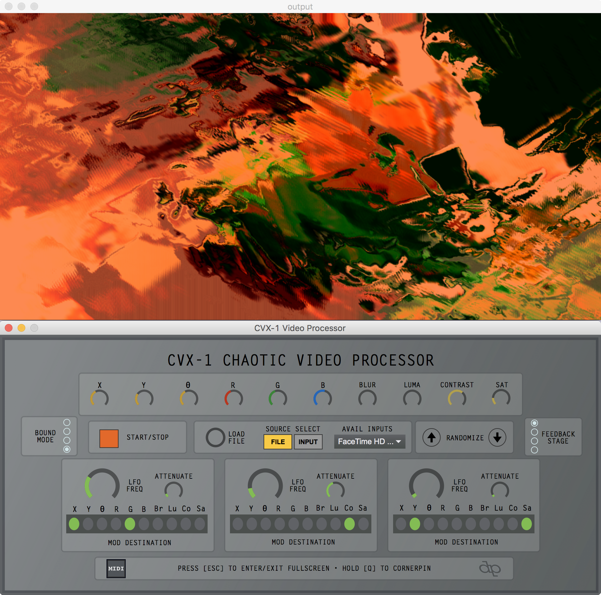

CVX-1 Chaotic Video Processor is a desktop application writtten in Max/MSP, allowing real-time manipulation of recorded or live video input based on a feedback loop of OpenGL shaders.
It features control over the following parameters:
- RGB bias filter
- X/Y tesselation and rotation angle
- Saturation, Contrast, & Blur
- Luminance-based distortion
- Feedback path
The modulation section contains three low frequency oscillators which can be used to automate each of the above parameters.
All parameters feature MIDI control and can be re-mapped to suit your device of choice, meaning this can be played as a video instrument using a faderbox, controlled by your hardware synthesizers, or receive real-time messages from another program such as Max/MSP or PureData.
Full documentation to come! In the meantime, send me an email if you have any questions.
This app is free for non-commercial use:
download OS X app (via dropbox)